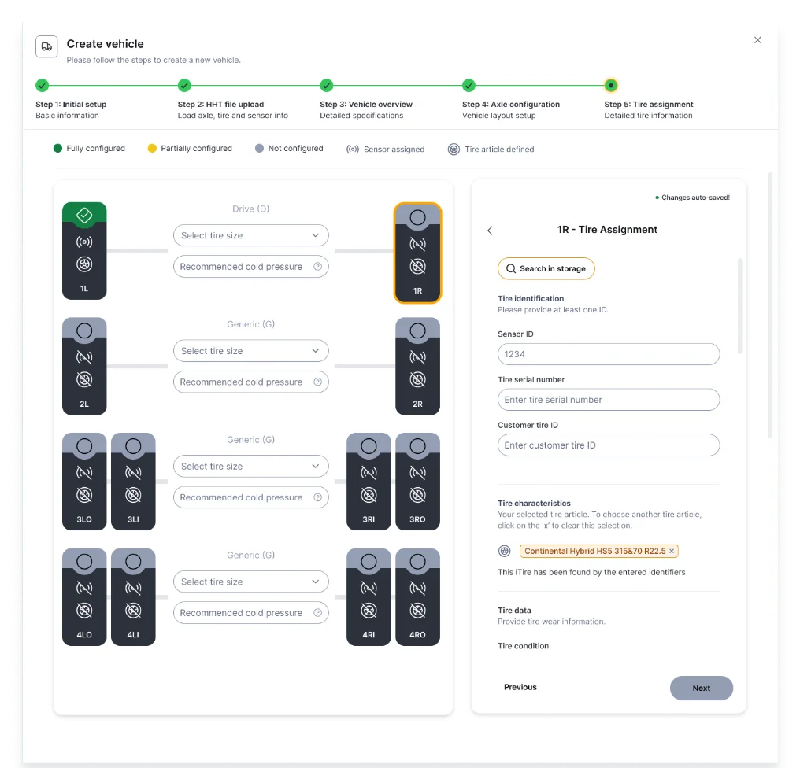
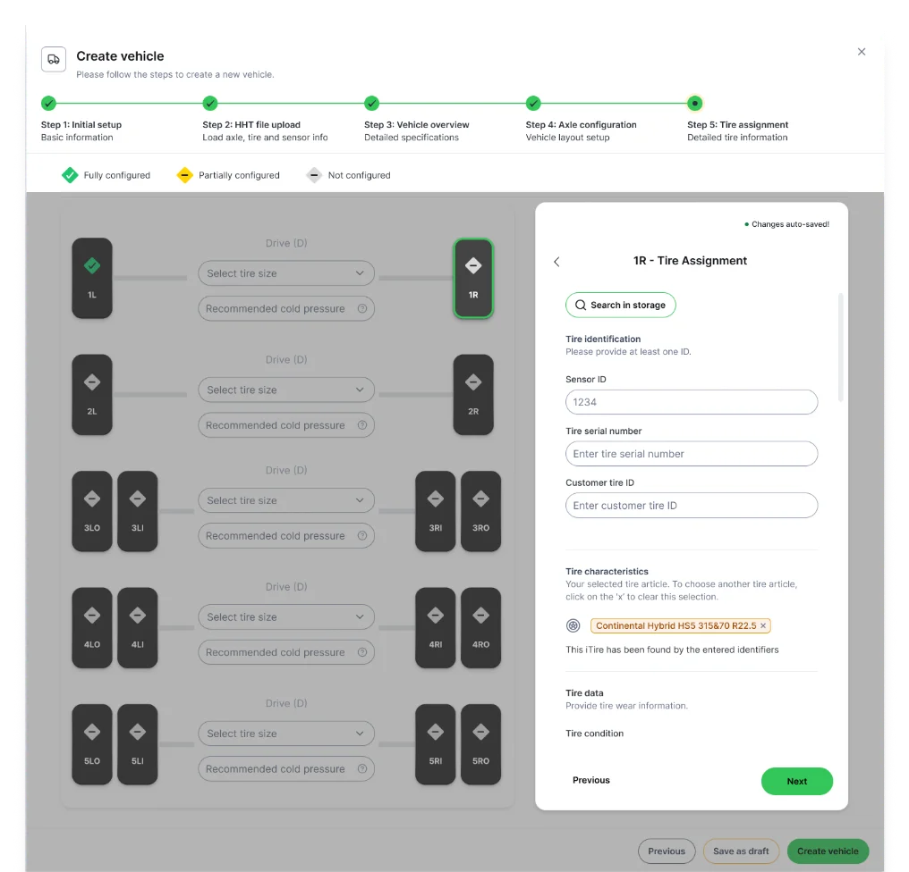
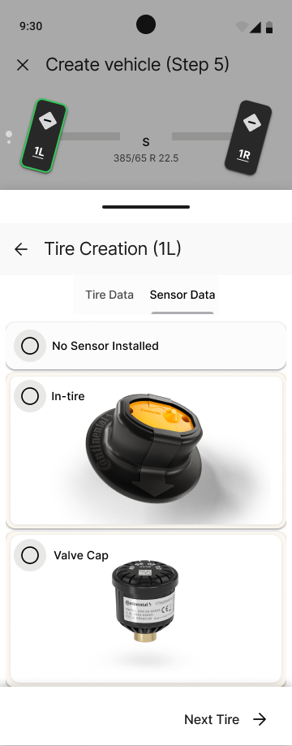
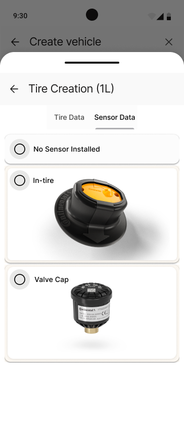
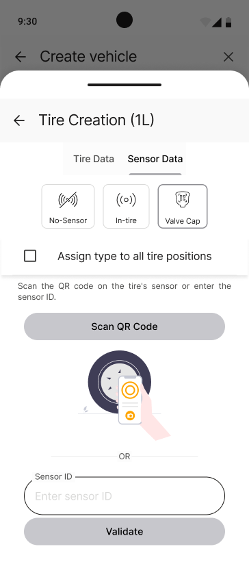
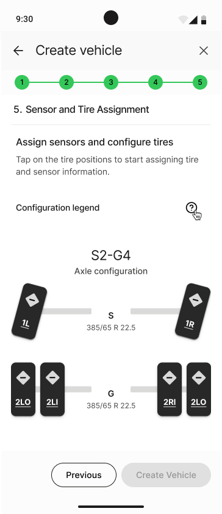
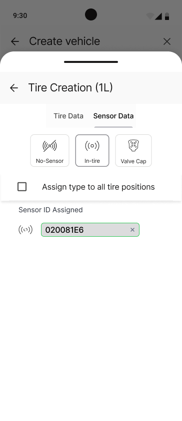
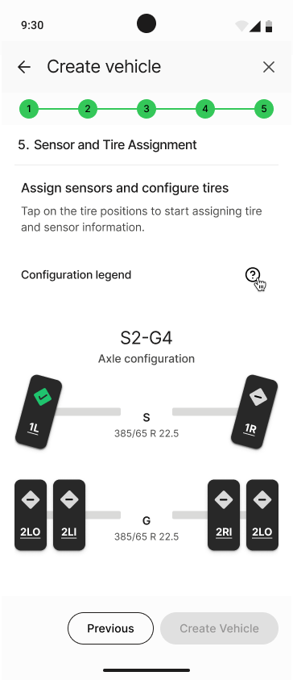
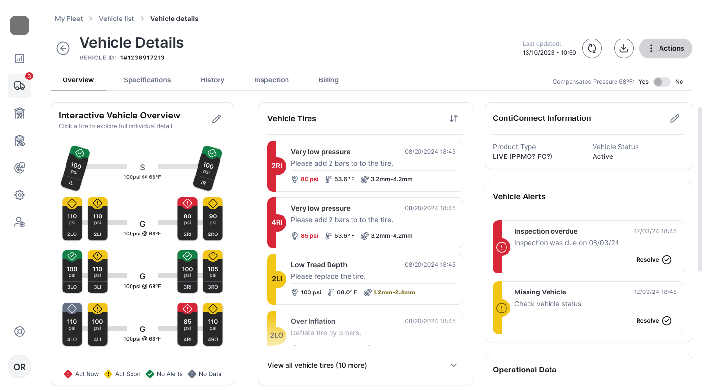
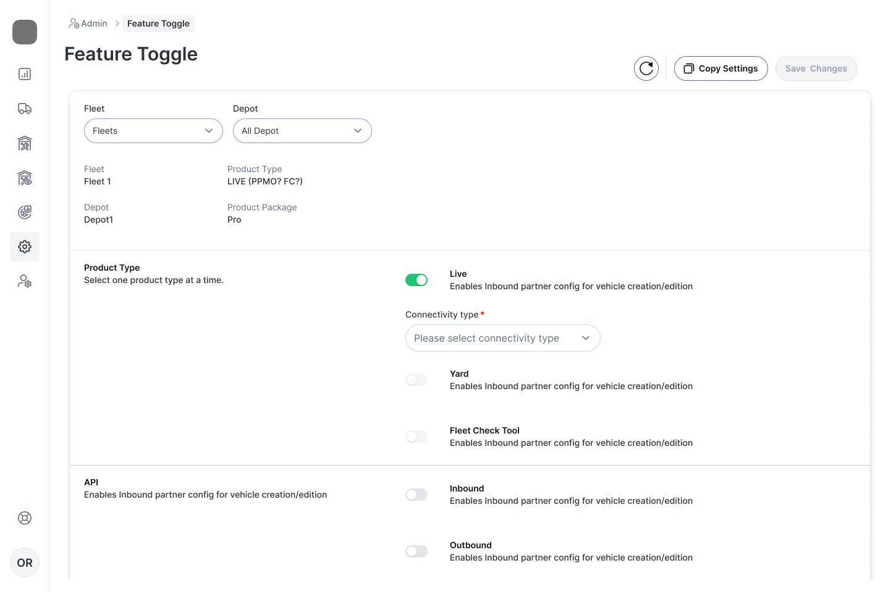

A comprehensive redesign of core workflows in a B2B fleet-management platform — focused on reducing cognitive load, improving navigation efficiency, and enhancing information accessibility.
Workflows
3
Core workflows redesigned
2
Platforms (Web & Mobile)
15+
Iterative design sessions
Overview
Working on a B2B fleet-management platform, I worked on UX redesign of three workflows that were causing friction for workshop technicians and fleet managers (external users) as well as internal users. Through user research, iterative design, and stakeholder collaboration, we simplified complex processes and improved task efficiency.
Vehicle Creation Process
Simplified tire and sensor assignment with better visual context and reduced steps.
Vehicle & Tire Details
Reduced scrolling and improved information access with interactive navigation.
Feature Toggle
Redesigned feature activation with categorization and clearer impact visibility.
Workflow 01 · Step 5 — Tire & Sensor Assignment
Vehicle Creation Process
The Challenge
•{{ challengeText }}
•Tire position icons are cluttered with detail that doesn't help users make decisions — confirmed in usability testing
The Solution
✓Parallel display of data and birdview reduces cognitive load by providing a visual map of where data is being added
✓Simplified position legend with fewer icons
✓Background and foreground logic puts focus on the input currently in progress, dimming everything else so attention stays on one thing at a time — reducing chances of error
Web Portal Redesign
Before

•Double scroll in single screen
•Input fields co relation ambiguity.
•Crowded tire position with icons
After

✓Vertical alignment with screen flow
✓Parallel display of data and birdview
✓Simplified position legend
Mobile Application Redesign
An iterative design process exploring navigation, visual enhancement, and simplicity to achieve the optimal balance.
Design iterations

Navigation-First
Focused on easy movement between positions.

Visual-First
Emphasis on step clarity with visual aids.

Simplistic
Clean screens with minimized information density.
Final mobile design

Step 1 · Tire Selection

Step 2 · Sensor Assignment

Step 3 · Confirmation
Approaches explored
Navigation-based
Easy movement between positions.
Visually enhanced
Step clarity with visual aids.
Simplistic
Minimized information density.
Final Solution
A hybrid approach that balances all three design directions:
✓Clear navigation without clutter
✓Progressive disclosure of information
✓Clean hierarchy and spacing
Workflow 02 · Improving Navigation & Information Access
Vehicle & Tire Details
The Challenge
•Information-heavy screens with excessive vertical scrolling
•Difficult to quickly jump between sections
•Limited fast-comparison capabilities
•Risk of missing critical information
•Slow access to frequently needed data
The Solution
✓Clear header & breadcrumbs for orientation
✓Interactive vehicle birdview for navigation
✓Clustered information with priority hierarchy
✓Tab-based organization for quick access
✓Reduced cognitive load
Design Evolution
Before
Long vertical scroll with difficult navigation and information scattered across the page.
After

Organized tab structure with interactive birdview and clear information hierarchy.
•Hard to understand the impact of enabling features
•Navigation becomes inefficient at scale
•Difficult to use on smaller screens
The Solution
✓Categorized, vertically scrollable list
✓Brief descriptions for each feature
✓Clear header actions: Save, Restore, Copy
✓Faster configuration across feeds and depots
✓Better scalability for new features
Design Evolution
Before
Horizontal scrolling layout with no categorization or feature explanations.
After

Simplified vertical list with categories, descriptions, and clear user actions.
Readability
Easier to read with clear categorization and brief feature descriptions.
Scalability
Vertical list design scales better as new features are added to the platform.
Efficiency
Clear actions for saving, restoring defaults, and copying configuration.
Note
This design has not yet been tested or developed. The proposed solution aims to create a more simplified and scalable interface that reduces errors and improves configuration speed.
Impact & Learnings
Design Process
Through iterative design, stakeholder collaboration, and user testing, I learned the importance of balancing multiple design approaches to achieve optimal usability.
✓Multiple iterations revealed trade-offs between approaches
✓Feedback sessions guided refinement of solutions
✓User-research data informed priority and placement
Key Outcomes
The redesign focused on reducing cognitive load, improving information access, and creating scalable solutions for growing feature sets.
✓Reduced scrolling and improved navigation efficiency